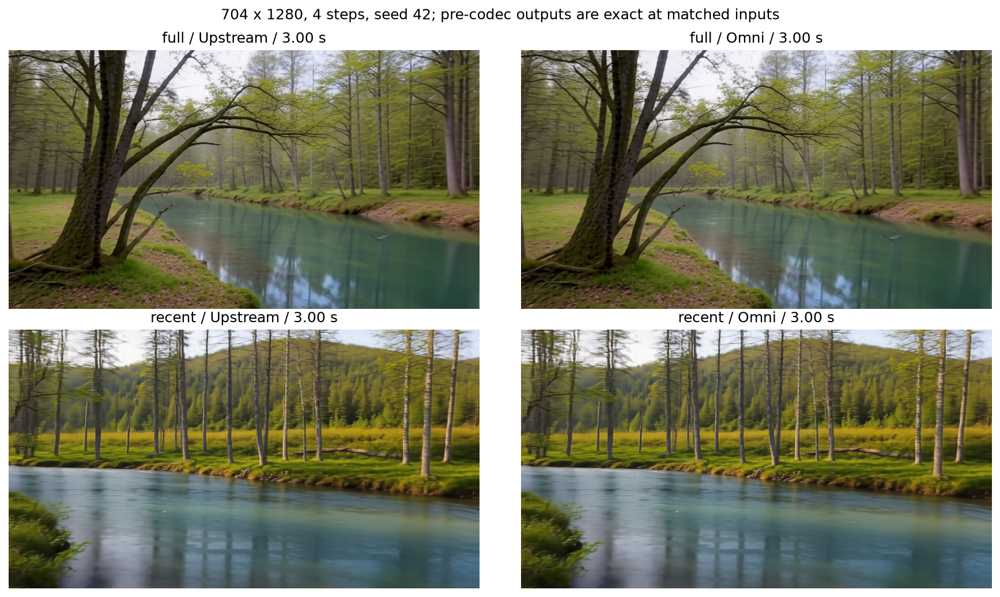
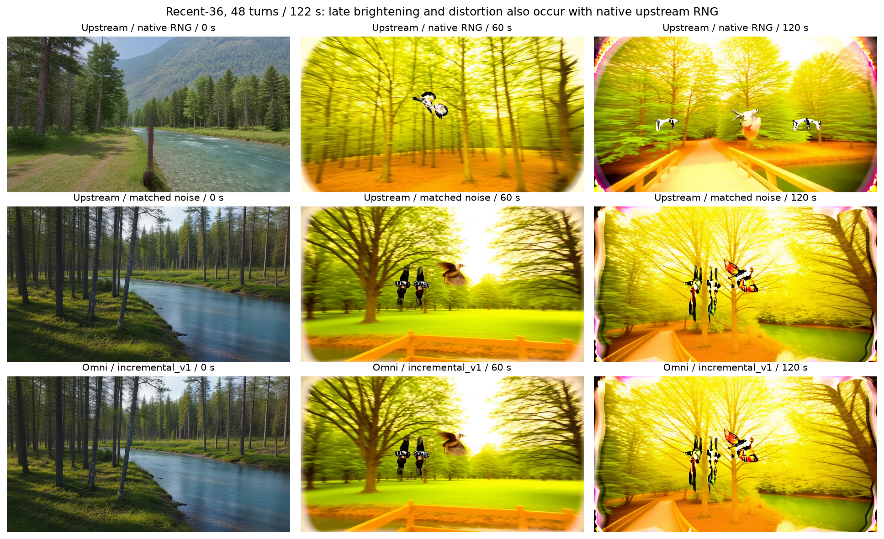
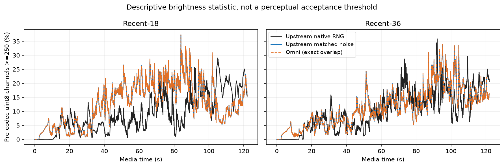
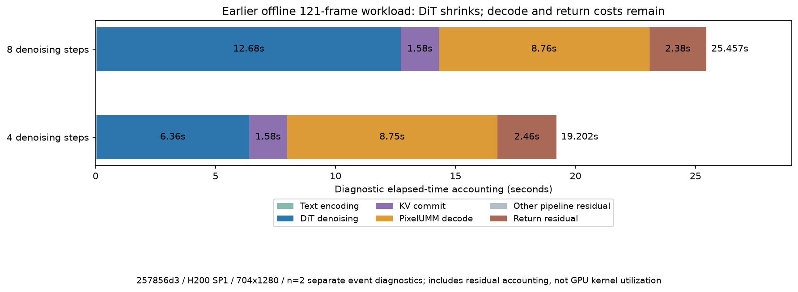

Hy-Nomas: accuracy, generated output and measured performance
2026-10-29 · PR #9338 · implementation 209771901 · H200 · BF16
Reported precision passes; late overexposure also occurs upstream.
Validated recent budgets: 18/36. The interrupted 72-budget campaign is excluded and was not retried.
Recent exactness uses equal actual noise; native-RNG controls are separate. One scene and seed were tested.
Model architecture and size
Qwen text conditioning → segment-autoregressive dual-stream DiT with camera/KV history → PixelUMM video decode.
DiT: 54 blocks, hidden 2048, 16 heads; text model: 28 layers, hidden 3584;
decoder: 36 layers, hidden 4096, 32 query / 8 KV heads.
Total: 22.60B parameters, 42.09 GiB BF16 weights, excluding KV/staging/activations/workspaces.
32-channel DCAE-V latents use 32× spatial and 4× temporal compression; PixelUMM windows are 10 latents with overlap 5.
Exact configs and weight-byte calculations
Reference and entrypoint comparisons
704×1280, SP1, resident BF16. Recent comparisons use upstream seg_ar.
Its 193-frame recent+chunk_ar probe failed in upstream at a cache write; no precision claim covers that combination.
Accuracy audit · Per-turn hashes
· Revisions/software

Long-horizon appearance
The native upstream RNG runs at both budgets also show late brightening, yellowing and distortion.
The fraction of pre-codec channels ≥250 rises from about 0.0005% in the first five seconds
to about 20.2% in the last five seconds. This statistic is descriptive, not a perceptual pass threshold.


At matched actual noise, all 48 Omni turns equal the upstream result. The mechanism remains unresolved.
The 48-turn rollout is distinct from the 2881-frame WebSocket diagnostic.
Raw frame statistics
Earlier offline four/eight-step results
257856d3, H200 SP1, resident BF16, 704×1280, 121 frames.
Ten unprofiled requests per step count, five before/five after diagnostics.
The 1.336× measured step-count ratio is not a quality-equivalence claim.
n=2 separate event diagnostics per step count. CUDA-event stream elapsed can include host gaps.
Residuals are accounting differences, not isolated IPC/PCIe measurements; nested wrappers are not summed twice.

Formal samples and stage means
· Raw stage observations
Earlier full-history per-chunk decomposition
b5c9b68f5, H200 SP1, 253 frames/4 steps, explicit capacity 64 latents/1 prompt.
Metadata intervals: n=5 unprofiled sessions; model/stage columns: means of n=2 separate diagnostics.
PixelUMM prediction is inside decode/convert; staging is inside DiT/commit. Last chunk includes flush.
These historical full-mode stage values are not measurements of current recent-mode stages.
Samples, peak memory, call counts and timing definitions
Current long-stream diagnostic
Implementation 209771901; SP2, 2881 frames, 4 steps, 20 controls, 24 fps, seed 42.
One session per budget, no matching warmup excluded. E2E excludes startup and includes controls,
encoding, IO, client decoding and diagnostics. These are not steady-state benchmark numbers.
Timing boundaries, chunk intervals and memory data
Current recent: every delivered chunk
The two current SP2 sessions have 45 chunks each. All 90 rows contain positions, frames,
history tokens, metadata intervals, first/complete decoded-chunk timestamps and pre-codec hashes.
No per-stage event timing was collected in these recent rollouts.
All 90 chunk rows
· Regional statistics and definitions
Historical repeated SDK benchmark
Earlier implementation 257856d3, 121 frames, 8 steps, 2 warmups + 5 measured requests per configuration.
SDK E2E excludes loading, encoding and IO. The SP1 recheck changed by −16.91% on the shared host.
These values have not been remeasured on the current bounded-history implementation.
All raw-summary statistics
Calculations and implementation boundaries
Media duration=frames/24; RTF=E2E/media duration; speedup=baseline median/candidate median.
The ordinary offline pipeline uses full history. Recent requires an AR session, uses shared video/text
history and incremental_v1 RNG. The API retains 4n+1 frame validation; realtime fixes total frames at start,
while typed ticks add turns. Runtime math depends on the pinned reference package.
This integration covers offline generation and normal realtime output. Production service stress,
compute-mid-generation cancellation and real blocked TCP sending are outside its acceptance scope.
GPU CI and a matched SGLang benchmark have not run.
Complete protocol, public reproduction commands and scope
Scope relative to RFC #14
Existing shared cancellation, timeout, quota and backpressure mechanisms remain in use.
This PR does not claim completion of the entire A4 service qualification.
Full RFC mapping and measurement detail
Complete viewing copies
Videos are scaled and recompressed. Numerical metrics use original pre-codec outputs.
Full: upstream / Omni, 147 frames
Recent: upstream matched noise / Omni, 147 frames
Offline AR / realtime, 129 frames
Recent-18: matched upstream / Omni, 122 seconds
Recent-36: matched upstream / Omni, 122 seconds
Upstream native RNG, recent-18, 122 seconds
Upstream native RNG, recent-36, 122 seconds
Source weights: Tencent Hunyuan. Codex assisted with implementation, experiments and reporting.
Generated media are model outputs for validation.